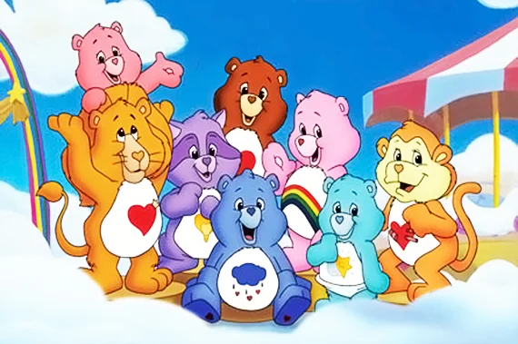
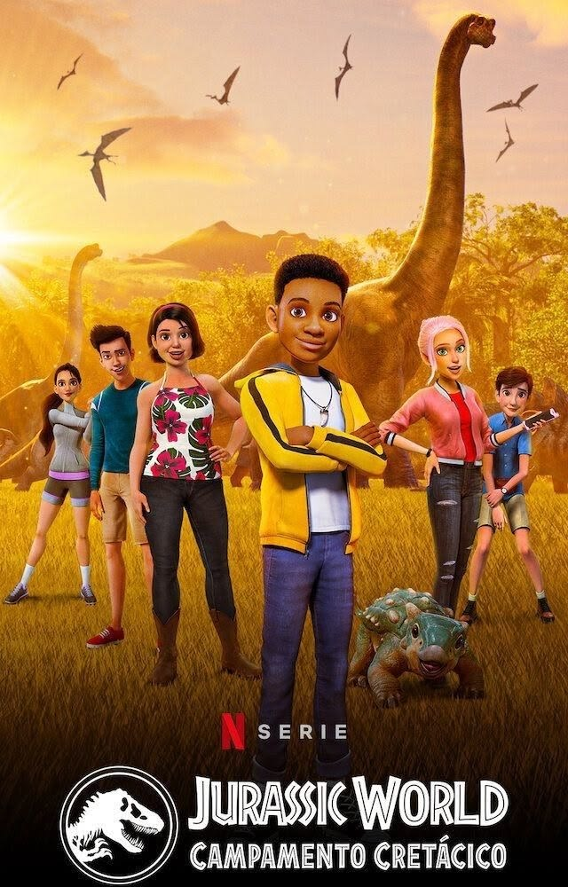
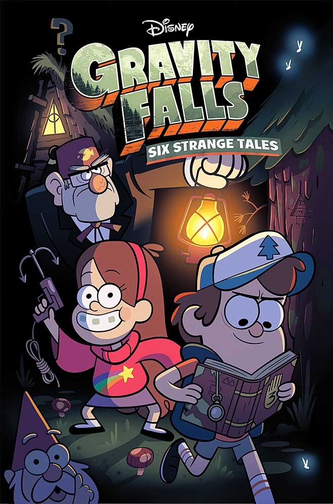

Olá! Meu nome é Joanna, tenho 15 anos e vim por meio deste site mostrar e falar um pouco sobre os meus filmes favoritos para vocês.
Pequenas informações iniciais sobre os filmes, séries e desenhos
Alguams informações básicas
Meu Malvado Favorito de 2010 é uma aclamada animação que narra a jornada de Gru, um supervilão rabugento e solitário que planeja o maior assalto do século: roubar a Lua. Para consolidar seu posto como o maior criminoso do mundo e superar seu jovem rival Vetor, Gru conta com o apoio do cientista Dr. Nefário e de seu carismático exército de Minions, pequenas criaturas amarelas obstinadas em servir ao mestre mais desprezível que encontrarem. O enredo ganha uma reviravolta quando Gru decide adotar três irmãs órfãs — Margo, Edith e Agnes — com o único propósito de usá-las como peões em seu plano mirabolante para invadir a fortaleza de Vetor. No entanto, a convivência diária com a inocência e o afeto genuíno das meninas começa a derreter o coração de gelo do vilão. Gradualmente, Gru se vê dividido entre a ambição de sua carreira criminosa e as responsabilidades de uma paternidade inesperada. No clímax da história, quando Vetor sequestra as garotas, Gru não hesita em abandonar seus objetivos egoístas e arriscar a própria vida para salvá-las. O desfecho consolida sua total transformação: ele desiste da vilania, adota as meninas definitivamente e descobre o verdadeiro sentido do amor familiar, provando que o afeto é capaz de redimir até o mais obstinado dos malvados.

Caillou é uma famosa série de animação canadense baseada nos livros de Christine L'Heureux. O desenho acompanha a rotina de um garotinho de quatro anos, curioso e ingênuo, que descobre o mundo e enfrenta as pequenas e grandes complexidades da primeira infância. Marcada por um ritmo calmo e cenários que imitam ilustrações de livros infantis, a produção se destaca por apresentar o ponto de vista puramente infantil diante de situações cotidianas, como ir à escola, lidar com frustrações ou brincar com sua irmã caçula, Rosie. Uma das principais características do protagonista é a sua calvície marcante. Embora tenham surgido teorias na internet sugerindo que ele estaria em tratamento contra o câncer, os criadores esclareceram que Caillou foi inicialmente concebido como um bebê de nove meses nos livros originais. À medida que a narrativa avançou para retratá-lo mais velho, manteve-se o design sem cabelos para preservar a identidade visual já consagrada pelo público. Apesar de seu forte apelo educativo e foco em valores como paciência e respeito, a série passou a dividir opiniões ao longo dos anos. Enquanto muitos pais e educadores elogiavam a abordagem realista das emoções infantis, parte do público criticava o comportamento do personagem. Caillou frequentemente exibia episódios de birra, teimosia e choro fácil, e o fato de seus pais reagirem de forma extremamente permissiva gerou debates sobre a influência do desenho no comportamento das crianças que o assistiam.

A versão de 2003 da série animada Moranguinho (Strawberry Shortcake), produzida pela DiC Entertainment, é considerada por toda uma geração como o reboot mais marcante e nostálgico da franquia. Afastando-se do formato dos antigos especiais de TV, esta produção reestruturou o universo da personagem para os anos 2000, modernizando o visual dos habitantes da Morangolândia (Strawberryland) com roupas características da época, como calças jeans de cintura baixa, sem perder a essência mágica e colorida que consagrou a marca. Na história, Moranguinho vive em uma encantadora casa em formato de morango gigante junto com sua irmãzinha Maçãzinha e seus fiéis animais de estimação, a gata Pudim (Custard) e o cãozinho Rocambole (Pupcake). A trama central acompanha o cotidiano dessa carismática e otimista protagonista, que atua como uma verdadeira líder comunitária ao lado de suas melhores amigas — como Laranjinha, Uvinha, Limãozinho e Biscoitinho —, além de seu pônei Pão de Mel. Juntas, elas embarcam em pequenas viagens e aventuras cotidianas explorando as terras vizinhas, organizando festas de aniversário, lidando com os ciúmes entre os bichinhos ou formando bandas de música. O grande charme da narrativa está na forma como o grupo resolve os impasses do dia a dia: em vez de grandes batalhas ou vilões ameaçadores, os episódios se focam na resolução de conflitos interpessoais por meio do diálogo, reforçando o valor da empatia, do compartilhamento e da verdadeira amizade. Exibida originalmente ao longo de quatro temporadas, a série também se destacou pela sua marcante trilha sonora e por expandir as fronteiras da Morangolândia, levando as personagens a conhecerem novas culturas em episódios especiais de viagem. Ao equilibrar o lúdico com lições valiosas de inteligência emocional para o público infantil, a animação de 2003 consolidou-se como um clássico da televisão aberta e fechada no Brasil, deixando uma lembrança afetiva profunda em todos que cresceram acompanhando aquele doce universo.

Os Ursinhos Carinhosos (Care Bears) são uma das franquias infantis mais consagradas do mundo, nascida originalmente em 1981 a partir de ilustrações para cartões de felicitações da empresa American Greetings. O sucesso estrondoso dos desenhos artísticos rapidamente impulsionou a criação de uma icônica linha de bichos de pelúcia e, posteriormente, de consagradas séries de animação e filmes que marcaram profundamente as gerações de 1980 e 1990. A narrativa acompanha uma adorável família de ursos multicoloridos que habita a Nuvem Rosa (ou Reino do Carinho), um lugar mágico feito de nuvens flutuantes e arco-íris, de onde eles vigiam a Terra para garantir que os bons sentimentos humanos permaneçam protegidos. O grande diferencial do universo reside na identidade visual e no propósito de cada personagem. Cada ursinho possui uma cor específica e uma insígnia única estampada na barriga, que simboliza o seu respectivo dever e traço de personalidade. Personagens icônicos como o Ursinho Zangado (com sua nuvem de chuva), a Ursinha Animada (com seu arco-íris) e o Ursinho do Coração (com seu coração vermelho) usam esses símbolos para canalizar energia positiva. Quando o mundo enfrenta uma grande ameaça — geralmente arquitetada por vilões sombrios como o terrível Coração Gelado, que tenta extinguir o amor e a empatia da humanidade —, os personagens se unem para disparar o poderoso "Raio do Carinho", uma rajada de luz mística vinda de seus peitos capaz de derreter a maldade e restaurar a harmonia.

Jurassic World: Acampamento Jurássico (Camp Cretaceous) é uma eletrizante série de animação digital que expande o universo da famosa franquia cinematográfica de ficção científica. A trama se inicia em paralelo aos acontecimentos do filme Jurassic World (2015) na icônica Isla Nublar, onde um grupo de seis adolescentes — Darius, Brooklynn, Kenji, Sammy, Ben e Yasmina — é selecionado para inaugurar um acampamento de alta tecnologia montado no coração do parque de dinossauros. O que prometia ser a maior aventura de suas vidas rapidamente se transforma em um pesadelo de sobrevivência: a temível e geneticamente modificada Indominus Rex escapa de seu cativeiro, espalhando o caos e provocando a evacuação geral da ilha. Esquecidos para trás pelas equipes de resgate, os jovens campistas se veem completamente isolados e à mercê de predadores pré-históricos vorazes, como o faminto Carnotauro (conhecido como Touro) e o terrível Scorpion Rex. Sem poder se comunicar com o mundo exterior, as crianças — que inicialmente não tinham nada em comum e pertenciam a realidades sociais totalmente distintas — são forçadas a deixar suas diferenças de lado. Ao longo de cinco intensas temporadas na Netflix, a narrativa em prosa acompanha a evolução desse grupo, que precisa cruzar florestas perigosas, consertar iates danificados e até desbravar novas ilhas tecnológicas controladas pela gananciosa corporação Manta Corp, liderada pelo manipulador Daniel Kon. Mais do que uma simples história de fuga e ação desenfreada contra dinossauros realistas, a obra se sustenta na profunda jornada de amadurecimento e união de seus protagonistas. Estranhos transformam-se em uma família inseparável, encontrando doçura na amizade com criaturas indefesas — como a carismática filhote de anquilossauro chamada Bolota — e coragem para sabotar os planos de mercenários gananciosos que tentam escravizar os animais. O desfecho celebra o empoderamento juvenil, mostrando que a lealdade mútua, a inteligência e o espírito de equipe foram as verdadeiras ferramentas que permitiram a esses seis jovens sobreviver ao retorno dos maiores gigantes que a Terra já conheceu.

Gravity Falls: Um Verão de Mistérios é uma aclamada série de animação que acompanha as férias dos irmãos gêmeos de 12 anos, Dipper e Mabel Pines. Eles são enviados para passar o verão com seu trambiqueiro tio-avô Stan (o "Tivô" Stan) na isolada e bizarra cidade de Gravity Falls, no Oregon. Stan gerencia a Cabana do Mistério, uma armadilha para turistas cheia de fraudes e falsas relíquias paranormais. No entanto, a pacata rotina vira de cabeça para baixo quando Dipper encontra escondido na floresta um misterioso diário com uma mão de seis dedos na capa e o número 3, repleto de anotações científicas sobre as reais anomalias e criaturas sobrenaturais da região. A narrativa em prosa se equilibra perfeitamente entre as personalidades contrastantes dos gêmeos: Dipper é racional, curioso e obcecado em descobrir a identidade do Autor do livro; Mabel é enérgica, excêntrica, usa suéteres coloridos e busca viver um romance de verão perfeito. Juntos dos funcionários da Cabana — o leal faz-tudo Soos e a descolada adolescente Wendy —, eles enfrentam gnomos, fantasmas, clonagens e monstros reais. À medida que os episódios avançam, o que parecia ser apenas uma coleção de mistérios isolados revela-se uma complexa trama interdimensional. A grande virada da história acontece quando o portal escondido no porão de Stan é ativado, trazendo de volta o verdadeiro autor dos diários: Ford Pines, o irmão gêmeo perdido de Stan que passou décadas preso em outras dimensões. O clímax da série converge para a chegada do Estranhagedon (Weirdmageddon), um apocalipse bizarro provocado pelo maior antagonista da história, Bill Cipher, um demônio triangular bidimensional de pura energia e mente caótica. Para salvar o universo, a família Pines precisa curar suas próprias mágoas do passado, combinando a genialidade de Ford, o sacrifício heróico de Stan e a inabalável união fraternal de Dipper e Mabel. Com apenas duas temporadas milimetricamente planejadas por seu criador Alex Hirsch, a animação consolidou-se como uma obra-prima da Disney, aclamada por prender tanto crianças quanto adultos em uma atmosfera nostálgica sobre o inevitável processo de crescer e se despedir da infância. Se você é uma pessoa curiosa sobre o universo de Gravity falls aqui esá o link para o site secreto onde tem varios misterios alguns já resolvidos e outros não pra você descobrir sobreO que você achou das minhas escolhas de filmes e desenhos?